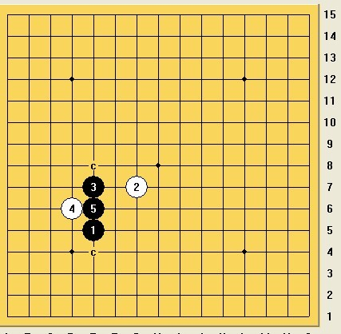

有没有人来博弈一盘
首页
五子棋交流
#1 有没有人来博弈一盘 作者：^版徒 发表时间：2013-10-15 18:00:30
#2 Re:有没有人来博弈一盘 作者：与郎共五 发表时间：2013-10-16 0:34:34
赌徒，来两盘五手交换如何？每人假先一盘。、
假先 26开局之一
假后 中心5*5内布4，5
假先 选色对弈。
#3 Re:与郎共五【==Re:有没有人来博弈一盘==】 作者：小样就是这个样 发表时间：2013-10-16 9:33:46
来
#4 Re:有没有人来博弈一盘 作者：与郎共五 发表时间：2013-10-16 10:40:19
我肯定3下在F4。不过这是楼主的邀贴，我觉得博弈规的不足有很多。
#5 Re:有没有人来博弈一盘 作者：小样就是这个样 发表时间：2013-10-16 11:10:33
嗯，我要看看黑3能叫几打才好
#6 Re:有没有人来博弈一盘 作者：与郎共五 发表时间：2013-10-16 11:19:29
单下4平衡不了，你现在又没有交换权，所以只能连下4，5布出平衡局面，连下后对方就有了选色权。
#7 Re:有没有人来博弈一盘 作者：小样就是这个样 发表时间：2013-10-16 11:41:25
 ,要求黑3选择4个点
,要求黑3选择4个点
#8 Re:有没有人来博弈一盘 作者：小样就是这个样 发表时间：2013-10-16 11:45:49
这样下棋只是试这玩一下，如果楼主觉得没必要，我就只好放弃了
#9 Re:有没有人来博弈一盘 作者：^版徒 发表时间：2013-10-16 11:50:12
#10 Re:有没有人来博弈一盘 作者：^版徒 发表时间：2013-10-16 11:51:01
没明白与郎共五的意思,你去开局吧,到时告诉我规则就好了
#11 Re:有没有人来博弈一盘 作者：小样就是这个样 发表时间：2013-10-16 14:36:58
#12 Re:有没有人来博弈一盘 作者：^版徒 发表时间：2013-10-16 15:08:59
 5地毯.rar
5地毯.rar
#13 Re:有没有人来博弈一盘 作者：屏蔽 发表时间：2013-10-16 15:11:28

#14 Re:有没有人来博弈一盘 作者：小样就是这个样 发表时间：2013-10-16 15:15:11
好快.....
#15 Re:有没有人来博弈一盘 作者：小样就是这个样 发表时间：2013-10-16 15:22:43
13楼笑什么
#16 Re:有没有人来博弈一盘 作者：屏蔽 发表时间：2013-10-16 16:19:10
你想让我回答是嘲笑还是没笑什么
#17 Re:有没有人来博弈一盘 作者：小样就是这个样 发表时间：2013-10-17 9:20:29
看似妙传，实则射门
#18 Re:有没有人来博弈一盘 作者：小样就是这个样 发表时间：2013-10-17 9:25:08
4如果走在5至少不会输那么快吧
#19 Re:有没有人来博弈一盘 作者：^版徒 发表时间：2013-10-17 18:26:06
5.rar ［ 小样就是这个样同学于 2013-10-18 8:59:12 时花20金币送鲜花一朵］
［ 小样就是这个样同学于 2013-10-18 8:59:12 时花20金币送鲜花一朵］
［ 小样就是这个样同学于 2013-10-18 8:59:12 时花20金币送鲜花一朵］
［ 小样就是这个样同学于 2013-10-18 8:59:12 时花20金币送鲜花一朵］
［ 小样就是这个样同学于 2013-10-18 8:59:12 时花20金币送鲜花一朵］
［ 小样就是这个样同学于 2013-10-18 8:59:12 时花20金币送鲜花一朵］
［ 小样就是这个样同学于 2013-10-18 8:59:12 时花20金币送鲜花一朵］
［ 小样就是这个样同学于 2013-10-18 8:59:12 时花20金币送鲜花一朵］
［ 小样就是这个样同学于 2013-10-18 8:59:12 时花20金币送鲜花一朵］
［ 小样就是这个样同学于 2013-10-18 8:59:12 时花20金币送鲜花一朵］
［ 小样就是这个样同学于 2013-10-18 8:59:12 时花20金币送鲜花一朵］
［ 小样就是这个样同学于 2013-10-18 8:59:12 时花20金币送鲜花一朵］
［ 小样就是这个样同学于 2013-10-18 8:59:12 时花20金币送鲜花一朵］
#20 Re:有没有人来博弈一盘 作者：小样就是这个样 发表时间：2013-10-18 8:49:52
好快.的..刀..啊.....
#21 Re:有没有人来博弈一盘 作者：小样就是这个样 发表时间：2013-10-18 8:56:40
错综复杂的结构，竟然有如此精彩的杀法，再找不出白4了
#22 Re:有没有人来博弈一盘 作者：小样就是这个样 发表时间：2013-10-18 9:11:19
。。。没钱了，再发个贴挣20金币